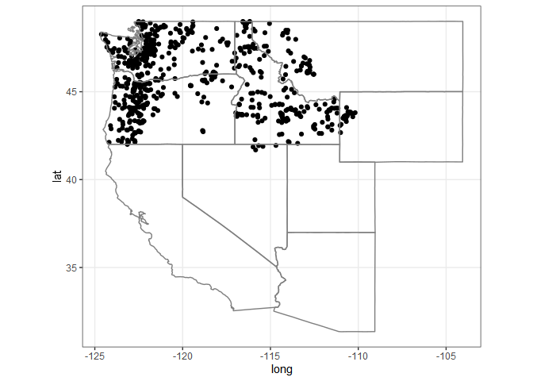
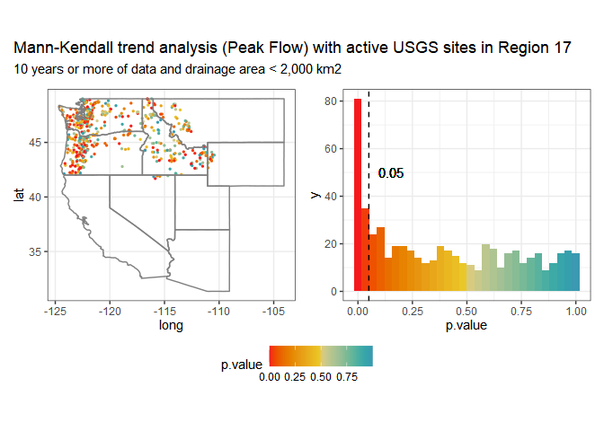
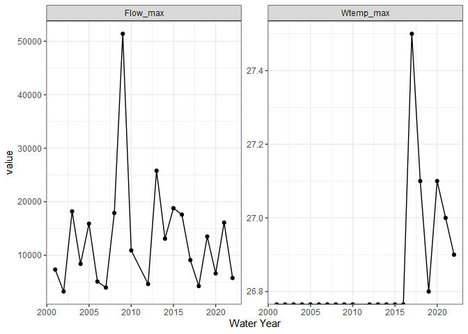
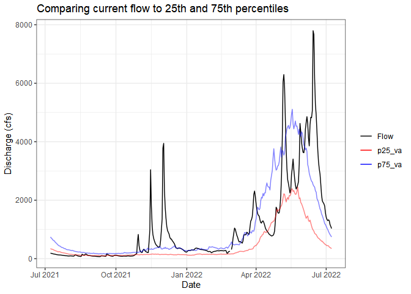

The goal of whitewater is to provide sequential and parallel processing for USGS stations in a tidy-style format. This package allows user to plan() their choice of parallel processing and then use the argument parallel = TRUE in whitewater function calls. The package also puts every output in a tibble with data munging of sites, parameter and stat codes, which results in a tidy style data frame.
Attention!
Due to potentially crashing (USGS Water Services)[https://waterservices.usgs.gov/] REST services parallel processing is kept to 120 requests/min. By following this rate limit, we can still benefit from parallel processing but also being mindful/respectful to the USGS Water Services via {dataRetrieval} and REST services. Thank you!
Installation
You can install the development version of whitewater from GitHub with:
# install.packages("devtools")
devtools::install_github("joshualerickson/whitewater")Example
This is a basic example which shows you how to solve a common problem: get daily values of discharge for multiple sites (all active sites in Pacific Northwest (Region 17)) using parallel processing. Please see furrr and future for more details on parallel processing methods.
Running in parallel
library(whitewater)
library(tidyverse)
library(sf)
library(future)
library(dataRetrieval)
huc17_sites <- dataRetrieval::whatNWISdata(huc = 17,
siteStatus = 'active',
service = 'dv',
parameterCd = '00060',
drainAreaMax = 2000)
cat("# of sites: ", nrow(huc17_sites))
#> # of sites: 675
st_as_sf(huc17_sites, coords = c('dec_long_va', 'dec_lat_va')) %>%
ggplot() +
geom_sf() +
borders('state', xlim = c(-130, -110), ylim = c(20, 50)) +
theme_bw()
#need to call future::plan()
##### Remember, please use 10 or less workers #####
plan(multisession(workers = 11))
#running on 11 cores
system.time({
pnw_dv <- ww_dvUSGS(huc17_sites$site_no,
parameter_cd = '00060',
wy_month = 10,
parallel = TRUE,
verbose = FALSE)
})
#> user system elapsed
#> 39.96 2.47 559.56
nrow(pnw_dv)
#> [1] 11752061
pnw_dv
#> # A tibble: 11,752,061 x 28
#> Station site_no drainage_area lat long altitude agency_cd Date Flow
#> <chr> <chr> <dbl> <dbl> <dbl> <dbl> <chr> <date> <dbl>
#> 1 DONNER~ 103960~ 124. 42.8 -119. 4254 USGS 1911-04-01 160
#> 2 DONNER~ 103960~ 124. 42.8 -119. 4254 USGS 1911-04-02 166
#> 3 DONNER~ 103960~ 124. 42.8 -119. 4254 USGS 1911-04-03 173
#> 4 DONNER~ 103960~ 124. 42.8 -119. 4254 USGS 1911-04-04 180
#> 5 DONNER~ 103960~ 124. 42.8 -119. 4254 USGS 1911-04-05 187
#> 6 DONNER~ 103960~ 124. 42.8 -119. 4254 USGS 1911-04-06 232
#> 7 DONNER~ 103960~ 124. 42.8 -119. 4254 USGS 1911-04-07 207
#> 8 DONNER~ 103960~ 124. 42.8 -119. 4254 USGS 1911-04-08 182
#> 9 DONNER~ 103960~ 124. 42.8 -119. 4254 USGS 1911-04-09 157
#> 10 DONNER~ 103960~ 124. 42.8 -119. 4254 USGS 1911-04-10 132
#> # ... with 11,752,051 more rows, and 19 more variables: Flow_cd <chr>,
#> # STILLING.WELL_Flow <dbl>, STILLING.WELL_Flow_cd <chr>,
#> # .Estimated.By.Regression._Flow <dbl>,
#> # .Estimated.By.Regression._Flow_cd <chr>, ..2.._Flow <dbl>,
#> # ..2.._Flow_cd <chr>, .Discharge.1921.to.1952._Flow <dbl>,
#> # .Discharge.1921.to.1952._Flow_cd <chr>, year <dbl>, month <dbl>, day <int>,
#> # doy <dbl>, wy_doy <dbl>, month_day <chr>, wy <int>, month_abb <fct>, ...Now we can use other ww_ functions to filter the data by water year, month, water year and month, as well as stat reporting (percentiles comparing current readings).
Water Year
Same as above, we can just call parallel = TRUE to run in parallel since we’ll be getting peak flows from dataRetrieval::readNWISpeak().
system.time({
pnw_wy <- suppressMessages(ww_wyUSGS(pnw_dv,
parallel = TRUE,
verbose = FALSE))
})
#> user system elapsed
#> 16.86 0.72 418.25
pnw_wy
#> # A tibble: 32,663 x 27
#> Station site_no wy peak_va peak_dt drainage_area lat long altitude
#> <chr> <chr> <int> <dbl> <date> <dbl> <dbl> <dbl> <dbl>
#> 1 ABIQUA C~ 142007~ 2014 NA NA 45.3 45.0 -123. 193
#> 2 ABIQUA C~ 142007~ 2015 3330 2014-12-21 45.3 45.0 -123. 193
#> 3 ABIQUA C~ 142007~ 2016 5980 2015-12-07 45.3 45.0 -123. 193
#> 4 ABIQUA C~ 142007~ 2017 3740 2017-03-09 45.3 45.0 -123. 193
#> 5 ABIQUA C~ 142007~ 2018 4290 2017-10-22 45.3 45.0 -123. 193
#> 6 ABIQUA C~ 142007~ 2019 3700 2019-04-07 45.3 45.0 -123. 193
#> 7 ABIQUA C~ 142007~ 2020 2600 2020-01-28 45.3 45.0 -123. 193
#> 8 ABIQUA C~ 142007~ 2021 5360 2020-12-20 45.3 45.0 -123. 193
#> 9 ABIQUA C~ 142007~ 2022 NA NA 45.3 45.0 -123. 193
#> 10 AHTANUM ~ 125025~ 1904 NA NA 107. 46.5 -120. 940
#> # ... with 32,653 more rows, and 18 more variables: obs_per_wy <int>,
#> # wy_count <int>, Flow_sum <dbl>, Flow_max <dbl>, Flow_min <dbl>,
#> # Flow_mean <dbl>, Flow_median <dbl>, Flow_stdev <dbl>, Flow_coef_var <dbl>,
#> # Flow_max_dnorm <dbl>, Flow_min_dnorm <dbl>, Flow_mean_dnorm <dbl>,
#> # Flow_med_dnorm <dbl>, Flow_max_sdnorm <dbl>, Flow_min_sdnorm <dbl>,
#> # Flow_mean_sdnorm <dbl>, Flow_med_sdnorm <dbl>, Flow_sd_norm <dbl>
Without using parallel
If you just want a few sites (or one) and not use parallel processing, go for it! You’ll still get the advantages of filtering and stats. In addition, You don’t always have to pipe a ww_dvUSGS() object into the ww_*() and can just use the sites argument. In the example below I’ll do this but IMO its nice to start with a ww_dvUSGS() object because you’ll likely come back to it.
withlacoochee_temp_and_flow <- ww_wyUSGS(sites="02319394",
parameter_cd = c("00010", "00060"))
#> v 'water year' was successfully downloaded.
#> > now starting to gather peak flows using dataRetrieval::readNWISpeak
#> v 02319394 'peak flows' were successfully downloaded.
withlacoochee_temp_and_flow %>%
pivot_longer(c('Wtemp_max', 'Flow_max')) %>%
ggplot(aes(wy, value)) +
geom_point() +
geom_line() +
theme_bw() +
labs(x = 'Water Year') +
facet_wrap(~name, scale = 'free')
Stats
Sometimes you just want to compare the current flow (water year or past week, whatever you want) to historical flows. The ww_statsUSGS() function does this for you! It takes the historical values for your parameter (flow in this example) and returns percentiles (dataRetrieval::readNWISstat()) but also combines the current values.
yaak_river_dv <- ww_dvUSGS('12304500')
#> v Yaak River near Troy MT 'daily' was successfully downloaded.
yaak_daily_report <- ww_statsUSGS(yaak_river_dv,
temporalFilter = 'daily',
days = 365)
#> v Yaak River near Troy MT 'NWIS Stat' for Temporal Filter (daily) was successfully downloaded.
yaak_daily_report %>%
pivot_longer(c('Flow', 'p25_va', 'p75_va')) %>%
ggplot() +
geom_line(aes(Date, value, color = name, alpha = name %in% c('p25_va', 'p75_va'))) +
scale_color_manual(values = c('black', 'red', 'blue')) +
scale_alpha_manual(values = c(1,.5), guide = 'none') +
labs(y = 'Discharge (cfs)', color = '', title = 'Comparing current flow to 25th and 75th percentiles') +
theme_bw()